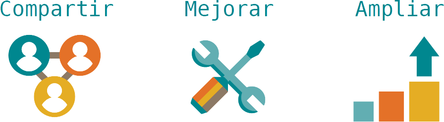
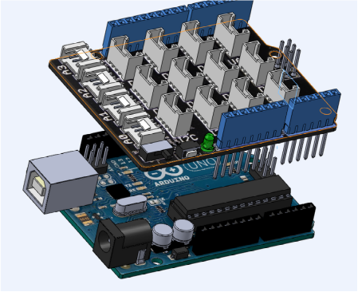
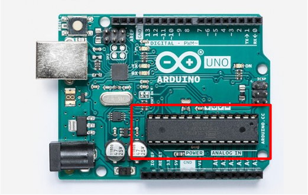

ESP8266 ARDUINO CON WIFI

CARACTERÍSTICAS DEL ESP8266
Hola y bienvenidos a este tutorial de Arduino, comenzemos por una breve
explicación de

Uno ejemplos son:
Las impresoras 3D (reprap.org)
Los drones (ardupilot.org).
La robótica educativa (mClon) donde lideran sin duda el mercado.
Estos proyectos evolucionan rápidamente gracias a la participación de extensas comunidades.

Disponemos de una extensa variedad de tarjetas electónicas de prototipado Open Souce, pero sin duda el Arduino Uno sigue siendo la mejor opción para comenzar a crear los primeros proyectos, es económica, disponemos de una extensa documenación y shields (extensiones) que añaden nuevas funcionalidades.

Este es un Arduino Uno original con su protoboard.

Es una tarjeta electrónica que funciona al igual que un ordenador. La clave es su microchip el ATmega 328P, que es un circuito integrado con memorias, procesador y pines de entradas y salidas.

El diseño de la tarjeta de Arduino Uno nos facilita el acceder a su microchip a través de un puerto USB, alimentarlo con un conector de 5 a 12 voltios y nos etiqueta los pines de conexión.

Continua con el siguiente tutorial